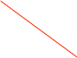
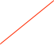
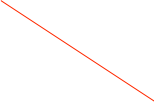
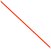

Run List


A Run List object allows you to parameterize scripts while cycling thru a large number of runs. It can also be used without any scripts to run a fixed number of runs and then stopping.

The current state of each entry. If a run is in progress, then the number of seconds left in the run will be displayed
Save/restore the list to a file. Note that the list is automatically saved to the configuration.
The last file that was used to save/restore the list. Note that the list is also automatically saved in the configuration. You only have to save to a separate file if you want to. If you do load a new list, remember that a different script may have to be loaded
Length of run in seconds

Scripting Notes
If using a script, special care must be taken that the script parameters in the lists are all of the same form. They must be either all single numbers or all a comma separated list that will be treated as an array. The values will be passed into the main function as its input argument. Here’s an example script using a single value:
function main(a)
{
print "got: ",a;
}
Here’s an example using an array of values:
function main(a)
{
print "got: ",a[0]," ",a[1]," ",a[2];
}
When used with the scripts, the scripts should be written to accept a parameter which can be either a single number or an array of numbers -- see scripting notes below. The start script will run once at the start of every run/subrun. The end script will run once at the end of every run/subrun.

If checked then that run will be a subrun of the previous run.

Add/remove an entry. The ‘Delete’ key will remove a selected item.
The parameters that will be passed to the start script. All the entries should have the same form, either single numbers or the same number of values separated by commas.
If checked the runs entries will execute in random order
Start/Stop the list
The parameters that will be passed to the end script. Same format as the start parameters
Connect the Run List object to one or both script objects. The one on the left runs at run start. One on the right runs at end of run.